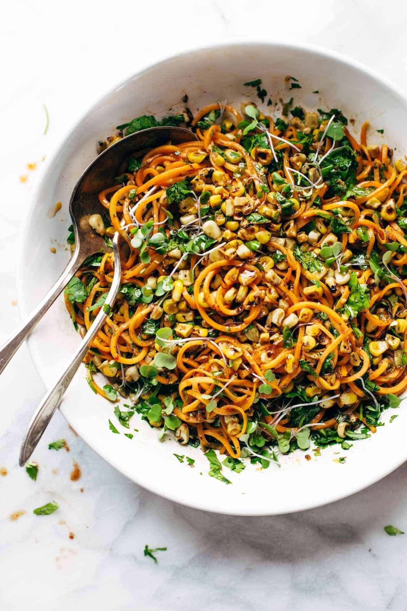

Sweet Potato Noodle Salad
A fast hack is to buy the already noodled-sweet potatoes in
the produce or frozen-food section
"This salad is so good and hearty!" Erika, Boulder, Colorado"

Ingredients
FOR THE SWEET POTATO NOODLE SALAD:
- olive oil
- 2 sweet potatoes, spiralized!
- 4 ears sweet corn (kernels cut off the cob)
- 1 cup chopped fresh cilantro
- (optional) 1 cup chopped fresh greens, micro greens, arugula,
whatever you have on hand
- 1/2 cup pepitas
FOR THE CHIPOTLE DRESSING:
- 1/3 cup olive oil
- 3 tablespoons water
- 2 individual chipotle peppers, canned in adobo sauce
- 1 clove garlic
- 1 teaspoon agave or honey
- juice of one orange
- juice of one lemon or lime
- generous pinch of salt
Instructions
- Heat a little bit of olive oil in a skillet over medium heat. Add the sweet
potato noodles and toss for a minute or two until softened.
- Wipe the skillet out so it's dry. Add the corn kernels and turn the heat
to medium high. Toss around in the pan every few minutes until roasted-looking.
- Toss the noodles, corn, cilantro, and pepitas together. Save a little of each
ingredient for topping the salad if you want it to be extra pretty.
- Pulse the dressing ingredients in a food processor until smooth. Taste
and adjust to your liking.
- Toss with the salad ingredients and you're good to go!
Explore the other lettuce-free salads